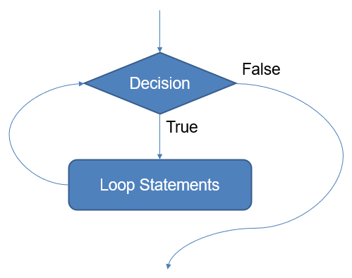

for variable in <container>:
<loop statements>02-14-24 (Wednesday)
Lord, we pray for ourselves in our daily study and work.
We give thanks for the skills we already have; we pray for wise and good use of these skills in building your kingdom.
We pray for those thinking about changing their study and/or work - especially those unhappy or insecure; those feeling undervalued or unfulfilled; those feeling that are in the wrong place; those who can’t wait for 5pm on Friday.
We pray for those with no sense of direction or purpose or vocation, for those drifting,
for those wanting to do a particular job, but unable through disability, illness, lack of confidence or lack of opportunity;
for those who are unemployed.
We pray for those at school or college now making decisions which will affect our working lives. We pray for all Careers Advisers.
We pray for those who are teaching us;
for our colleagues,
for our administrators.
1 Repetition statements
- Natural and computer languages can describe things that are repeated.
“For the LORD is good and his love endures forever; his faithfulness continues through all generations.” Psalm 100?5
- In computer science, repetition is portrayed with the metaphor of a loop.

One aspect of the LOOP, and in many ways its defining quality, is the minimal means that result in automated infinite production. Is it when writing a simple FOR statement for the first time, counting to, say, 10 and printing to the screen at each iteration, that the novice programmer “Beheld the living traces and the sky-pointing proportions of the mighty Pan”?
- Wilfried Hou Je Bek, “Loops”, in “Software studies: a lexicon”
1.0.1 How we we rule with loops?
- Every time we use a loop, we are pronouncing a judgment about what similar and what is different.
- Every time we use a loop, we are pronouncing a judgment about what can be scaled.
1.1 Two types of loops
- Definite iteration: Loops that repeat a predefined number of times - the FOR statement
- Indefinite iteration: Loops that continue until a condition occurs - the WHILE statement
“Although often interchangeable, FOR is like a tourist that knows when it will be home (but with the power to RETURN earlier), WHILE is like a traveller away for as long as there is no hard reason to come back, potentially forever.”
- Wilfried Hou Je Bek, “Loops”, in “Software studies: a lexicon”
2 For loops
- This code will repeat through each item in the container (list, tuple, set, etc)
variableis declared at the loop and will only be available inside the loop.- Its value will vary with each iteration, assuming the current value in the sequence/container
- Like the while loop, statements in the for loop body must be indented and aligned in the same column!
2.1 Examples
for name in ["Joe", "Amy", "Brad", "Zuki","Thandi",'Joe']:
print("Hi", name, "how are you?")Hi Joe how are you?
Hi Amy how are you?
Hi Brad how are you?
Hi Zuki how are you?
Hi Thandi how are you?
Hi Joe how are you?for val in (3, 11, 22, 0, -3):
print(val)3
11
22
0
-33 Ranges
rangeis a data type that offers an iterable sequence of integers
To create a range, you can use 1 to 3 arguments:
range(stop): integer sequence will go from0tostop - 1- Example:
list(range(4))is[0,1,2,3]
- Example:
range(start,stop): integer sequence will go fromstarttostop - 1- Example:
list(range(3, 7))is[3,4,5,6]
- Example:
range(start,stop, step): integer sequence will go fromstarttostopsummingstepat each stage- Example:
list(range(1,10,3))is[1,4,7]
- Example:
4 While loops
- Conditional iteration tests a condition to determine if a loop should continue
- Called continuation condition
while <condition>:
<loop statements>
4.1 Examples
x = 10
while x > 0:
print(x)
x = x - 110
9
8
7
6
5
4
3
2
1count = 0
while (count < 10):
# Point A
print ("Olá...", count)
count = count + 1
# Point B
# Point CConsider the following affirmations and say if they are right or wrong:
count < 10is alwaysTrueat point C.count < 10is alwaysFalseat point B.count < 10is alwaysTrueat point A.count < 10is alwaysFalseat point C.count < 10is alwaysTrueat point B.
5 Nested loops
Loops can also be placed inside of loops.
for x in range(5):
print(x, end=' ')
for y in range(x,4):
print(y, end=' ')
print()You can visualize this code at http://www.pythontutor.com/visualize.html
What will this print?
5.1 Example: matrix creation
mat = []
lines = int(input("Enter the number of lines: "))
cols = int(input("Enter the number of columns: "))
for i in range(cols):
line = []
for j in range(lines):
x = float(input(f"Enter the number at line {i} and col {j}: "))
line.append(x)
mat.append(line)6 Break and continue
- A
breakstatement in a loop causes an immediate exit of the loop.
sum = 0.0
while True:
data = input('Enter a number: ')
if data == '':
break
sum += float(data)
print('The sum is', sum)- What does this code do?
i = 0
while i < 5:
i += 1
if i==2:
continue
print(i)1
3
4
5What does this code do?
Breaks and continues can sometimes simplify a loop’s structure and improve readability!
7 Infinite loops
- If a loop termination condition is never met, we have an “infinite loop”
count = 0
while (count < 9):
print('The count is:', count)
print("Good bye!")- In this case, notice we didn’t update the counting variable (also called iterator or loop variable)
8 The Halting Problem
- Is it possible to be sure that a program is not stuck?
- Impressively, Alan Turing proved that NO! Computer programs are undecidable.
9 Discussion: what is enough?
In some sense, that means that there is not always an mathematical/algorithmic answer to the question: “is it enough?”
Maybe we can say that, as society gets more control over reality, nothing is enough. We enter in what sociologist Hartmut Rosa explored as an acceleration society. We don’t know any halt.
“Pure activity does nothing more than prolong what already exists. (…) Activity that follows the stupidity of mechanics is poor in interruptions. Machines cannot pause. Despite all its computational performance, the computer is stupid, in that it lacks the ability to hesitate. (…) Possibly the computer counts faster than the human brain, and without repulsion welcomes an immensity of data, because it is free from any alterity. It is a positive machine. Precisely because of its autistic self-relation, because of the lack of nativity, the idiot savant generates those performances that only a computational machine would be capable of. In the thrust of that general positivation of the world, both man and society become a machine of autistic performance.” - Byung-Chul Han, “The Burnout Society”
“… our hearts are restless till they find rest in Thee.” - Augustine of Hippo, Confessions